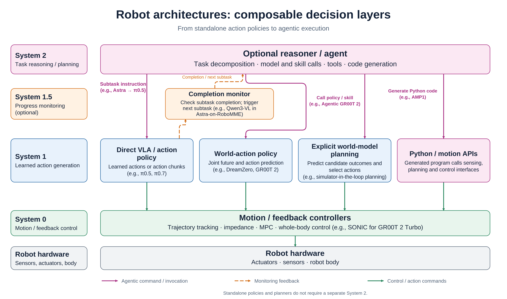
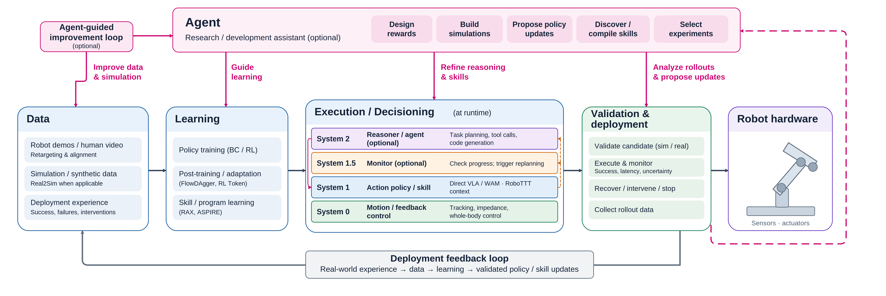

Execution & improvement.
Two views of robot learning, with component notes and links to the underlying research.
Browse the two loops and their components
The Execution Loop
Follow the roles of reasoning, monitoring, action generation and physical control. The sources show how particular systems combine or omit these components.


Figure examples & reading
- Hierarchy and operating clocksFast-WAM: Galaxea’s High-Speed World Action Model ↗ · ODE Policy: Robot Learning via Action Dynamics, Not Actions ↗ · Hang Zhao — Organizing Physical AI Across Timescales · talk
The System 0/1/2 proposal and handoff discussion are documented in Hang Zhao’s archived talk; related methods do not establish one required architecture.
- GR00T 2, agentic skills and SONIC controlGR00T 2: Scaling Robot Foundation Models for Generalization, Dexterity, and Adaptation ↗ · ASPIRE: Agentic /Skills Discovery for Robotics ↗ · Jim Fan — GR00T 2 and Agentic Robotics · talk
The GR00T project and keynote describe its action-model, supervisory and whole-body-control interfaces. ASPIRE is related reading on skill discovery. The technical whitepaper is linked, but its PDF body was not reviewed.
- Direct policies and world-action predictionπ0.7: A Steerable Generalist Robotic Foundation Model with Emergent Capabilities ↗ · DreamZero: World Action Models are Zero-shot Policies ↗ · π0.7 · talk · DreamZero · talk
π0.7 and DreamZero support specific policy interfaces, not a complete catalogue of all direct or world-action models.
- Astra and the completion-monitor exampleCan Astra Solve RoboMME without Breaking the Bank? ↗ · Hang Zhao — Organizing Physical AI Across Timescales · talk · Jim Fan — GR00T 2 and Agentic Robotics · talk
The Astra/RoboMME manuscript documents the adapted Qwen3-VL monitor. Its evaluation pauses the simulator during planning. Linked CoRL talks provide context; they are not recordings of this manuscript.
- AMP1: generated robot programsOn Agentic Manipulation Policies ↗
Sections 4A–4B describe generated Python, sensing/perception/motion APIs, and the retained robot backend.
1.01Reasoning, monitoring and physical control
A robot acts on a physical clock. A slower reasoning agent, a learned action model and a motion controller can have different responsibilities and deadlines.
- Hang Zhao’s System 2/1/0 framing separates task reasoning, learned motion or skills, and faster physical feedback. These labels describe the proposed organization in that talk. Standalone policies and planners need not contain all three layers, and measured operating rates depend on the actual system.
- Astra/RoboMME supplies a concrete monitor: a LoRA-fine-tuned Qwen3-VL-4B-Instruct model, called System 1.5 in that paper, checks each action chunk while π0.5 retains the subtask instruction. Completion or configured events trigger Astra again. Task-specific history, templates and event rules remain necessary; the simulator pauses during planning, so these results do not establish uninterrupted physical execution.
- At the physical end, motion or feedback controllers translate commands into robot behavior using sensing and contact information. The GR00T material pairs onboard action generation with SONIC whole-body control. Tracking a reference motion can still miss task failure, and contact or force requirements can demand additional feedback.
- Specify what passes down and back up: task intent, commands, progress, tracking error and failure signals. Measure sensing, inference, network and execution delays together. A diagram needs explicit handoff authority and behavior for stale decisions, missed deadlines or stalled skills to become a usable execution system.
What happens when a slow decision is stale, a skill stalls, or a physical controller misses its target?
Talks & transcripts
Papers & technical sources
- Can Astra Solve RoboMME without Breaking the Bank? ↗Primary paper reviewed · Research note
- GR00T 2: Scaling Robot Foundation Models for Generalization, Dexterity, and Adaptation ↗Primary project reviewed · Research note
- Fast-WAM: Galaxea’s High-Speed World Action Model ↗Primary project reviewed · Research note
- ODE Policy: Robot Learning via Action Dynamics, Not Actions ↗Primary paper reviewed · Research note
- Rolling-WAM: World Action Models with Rolling Imagination ↗Primary paper reviewed · Research note
1.02Action models: direct policies and WAMs
A direct policy maps observations and instructions to an executable action or action chunk. The model can still use reasoning, history or predictive representations internally.
- VLAs and diffusion policies expose an action-producing interface. MolmoAct2, π0.7 and RoboTTT illustrate different training recipes and forms of context within that interface. A model that acts directly can also become a callable skill inside a larger agentic system.
- World-action models couple knowledge of visual dynamics with action prediction. DreamZero and GR00T 2 generate future representations together with robot actions. ImageWAM instead uses image-editing caches to condition its action expert, avoiding dense future-video decoding; the action expert still performs its own denoising.
- LaWAM conditions actions on a compact latent future. Rolling-WAM distributes video-action denoising across successive control updates. These alternatives change the representation and computation schedule. Coherent predicted futures alone do not establish successful control or transfer to an unfamiliar robot.
- Compare the complete execution interface: camera and state inputs, action coordinates, chunk duration, update latency and response to interruption. Stable-camera evaluations and open-loop visualizations have narrower scope than general closed-loop deployment. Check what physical feedback remains active while an action chunk is running.
Which predictive representation improves action selection under a matched runtime and observation budget?
Talks & transcripts
Papers & technical sources
- DreamZero: World Action Models are Zero-shot Policies ↗Primary project reviewed · Research note
- GR00T 2: Scaling Robot Foundation Models for Generalization, Dexterity, and Adaptation ↗Primary project reviewed · Research note
- ImageWAM: Do World Action Models Really Need Video Generation, or Just Image Editing? ↗Primary paper reviewed · Research note
- LaWAM: Latent World Action Models for Efficient Dynamics-Aware Robot Policies ↗Primary paper reviewed · Research note
- Rolling-WAM: World Action Models with Rolling Imagination ↗Primary paper reviewed · Research note
- RoboTTT: Context Scaling for Robot Policies ↗Original paper · manuscript review pending · Research note
- π0.7: a Steerable Generalist Robotic Foundation Model with Emergent Capabilities ↗Primary paper reviewed · Research note
- MolmoAct2: Action Reasoning Models for Real-World Deployment ↗Original paper · manuscript review pending · Research note
- World Action Models are Zero-shot Policies ↗Original paper · manuscript review pending · Research note
1.03Agentic execution, tools and generated programs
An execution agent organizes the current task by choosing actions, calling tools or skills, checking results and recovering. This orchestration can run without changing persistent neural parameters.
- An agent can invoke an existing VLA or WAM as a skill rather than generate every motor command itself. In GR00T 2’s agentic example, the supervisor calls the action model, invokes an ASPIRE code skill when manipulation stalls, and returns control to the model after the repair.
- Generated programs offer another execution interface: code calls available perception, planning, measurement and control APIs. ASPIRE searches control programs and retains compact repair guidance while the underlying LLM stays frozen. Its admission verifier does not eliminate stale guidance or conflicts in a growing skill library.
- PhysCaP uses interactions and measurement APIs to update limited physical beliefs, then writes programs that use those beliefs. The changing artifacts are information and executable plans, rather than a newly trained neural policy. Its reported interaction-efficiency statistics are conditional on successful episodes.
- MobiAgent separates a runtime planner and reflection critic from later offline policy updates. Evaluate what is executed now, what persists afterwards and who supplies resets, calibration or verification. ASPIRE’s real-robot transfer still includes human guidance and debugging; useful orchestration is bounded by its available interfaces.
- AMP1 makes the code route explicit: a persistent Python interpreter calls perception and motion APIs and writes timed end-effector/gripper waypoints. The backend still supplies inverse kinematics, trajectory checks and controller execution. AMP1+ retains code and notes across episodes with fixed model weights, making this different from neural-policy training.
Is the agent changing the current plan, a reusable program, a skill inventory, or policy parameters?
Talks & transcripts
Papers & technical sources
- On Agentic Manipulation Policies ↗Primary paper reviewed · Research note
- GR00T 2: Scaling Robot Foundation Models for Generalization, Dexterity, and Adaptation ↗Primary project reviewed · Research note
- ASPIRE: Agentic /Skills Discovery for Robotics ↗Primary paper reviewed · Research note
- PhysCaP: Grounding Code-as-Policy Agent with Physics-Informed Exploration ↗Primary paper reviewed · Research note
- MobiAgent: Dual-Loop Recursive Policy Self-Improvement for Long-Horizon Mobile Manipulation ↗Primary paper reviewed · Research note
1.04Explicit world-model planning
An explicit planner compares candidate actions using predicted outcomes. This decision-time search exposes a different interface from world knowledge embedded inside a direct action model.
- Current state and candidate actions feed predicted rollouts; an objective or constraint selects a plan; the robot executes part of it and observes again. The cloth-refinement talk supplies a simulator-in-the-loop example using reconstructed cloth state and parallel refinement of candidate behavior.
- LeWAM learns latent dynamics and an action distribution. Its planning mode samples candidate plans and refines their actions through learned dynamics while the model parameters stay fixed. This computation changes the chosen actions during the call, rather than training new persistent model weights.
- Keep evaluation regimes separate. LeWAM’s goal-image planning is tested in simulation, while its physical behavior-cloning experiments use direct execution under another protocol. RAM provides narrower reachability queries and MoRE studies specialized dynamics. SuperMimic’s differentiable optimization is policy training, not this same online search loop.
- Planning depends on state estimates, model fidelity, the objective and the available action interface. Longer horizons can compound error; more candidates and refinement steps consume execution time. Compare direct control and planning with matched goal information, action limits, runtime budgets and failure-handling conditions.
Does explicit rollout search improve decisions enough to justify its model error and execution-time cost?
Talks & transcripts
Papers & technical sources
- LeWAM: End-to-End World and Action Modeling with JEPAs ↗Primary paper reviewed · Research note
- SuperMimic: Scaling Humanoid Whole-Body Control with One Differentiable World Model ↗Primary project reviewed · Research note
- DreamZero: World Action Models are Zero-shot Policies ↗Primary project reviewed · Research note
- Enabling Robust Cloth Manipulation via Inference-Time Simulator-in-the-Loop Refinement ↗Original paper · manuscript review pending · Research note
- SuperMimic: Scaling Humanoid Whole-Body Control with One Differentiable World Model ↗Original paper · manuscript review pending · Research note
- MoRE: Mixture-of-Experts for Multi-Physics Robotic World Models ↗Original paper · manuscript review pending · Research note
- RAM: Reachability Across Morphologies ↗Original paper · manuscript review pending · Research note
1.05Runtime memory and context
Runtime memory preserves information that the current observation cannot supply, such as an earlier object location, completed subtask or failed attempt. Its storage and reset rules determine what it can support.
- History can be stored as compressed observations, spatial state, contextual demonstrations or recurrent fast weights. Each design chooses which evidence remains available and how actions retrieve it. More context is useful only when it preserves the information needed by the actual task.
- RoboTTT’s fast weights act as fixed-size recurrent state. An observation and current fast state produce an action chunk and an updated state. Although gradient-based updates occur inside the sequence mechanism, this inference state has a different role from persistent checkpoint parameters trained for later deployments.
- VLRLA uses reward-bearing episode history with checkpoint weights fixed. Dual-Stream Memory separates compressed progress from accessible visual-identity evidence. Compare these interfaces by what is stored, how it is retrieved and how reset or interruption affects subsequent behavior, rather than treating every memory update as the same learning process.
- Memory Anchors curates experience for training replay and belongs in the improvement chapter. Test resets of context, recurrent state and persistent parameters separately. Measure stale observations, retrieval errors, history length and latency. Better performance within one episode does not establish retained skill across new tasks or continuing deployment.
Which information survives a context reset, and which improvement persists in the trained policy?
Talks & transcripts
Papers & technical sources
- RoboTTT: Context Scaling for Robot Policies ↗Primary project reviewed · Research note
- VLRLA: Deployment-Time Adaptation of Vision-Language-Action Models through In-Context Reinforcement Learning ↗Primary paper reviewed · Research note
- Dual-Stream Memory for Vision-Language-Action Policies ↗Primary paper reviewed · Research note
- RoboTTT: Context Scaling for Robot Policies ↗Original paper · manuscript review pending · Research note
- MEM: Multi-Scale Embodied Memory for Vision Language Action Models ↗Original paper · manuscript review pending · Research note
- Memory-augmented Action-conditioned World Model for Robot Manipulation ↗Original paper · manuscript review pending · Research note
1.06Coordination with people and other robots
Execution can change the options available to an interaction partner. A person or another robot reacts to the system, so isolated policy success may miss important shared-task behavior.
- Negar Mehr’s keynote and the human-intention presentation consider agents whose behavior responds to the robot. Intent prediction and coordinated decisions can matter even when the robot’s motor controller is effective by itself. The partner’s observations, objectives and ability to communicate form part of the execution interface.
- Leave It Better Than Found studies sequential collaboration. A leading robot can finish its own task yet leave a box where a follower cannot pass. The method uses the follower’s value estimate to guide the handoff state while balancing the leader’s objective, without requiring jointly trained policies.
- The follower’s value is gated by out-of-distribution checks. A value estimate on an unfamiliar state can suggest an attractive but unusable handoff; the gate suppresses that signal where the follower’s training distribution cannot support it. This reliability condition is part of the method, not an optional interpretation.
- Residual co-pilot teleoperation keeps a person in shared control. Distinguish a human training prior, a runtime operator and an interaction partner when describing autonomy. Evaluate joint success, feasible handoffs, communication and intervention costs, and each participant’s objective under the specific interaction setup being tested.
Does successful action by one participant leave the shared task feasible for the next participant?
Talks & transcripts
Papers & technical sources
- Learning Human Intention for Robotic Manipulation ↗Original paper · manuscript review pending · Research note
- Efficient and Reliable Teleoperation through Real-to-Sim-to-Real Shared Autonomy ↗Original paper · manuscript review pending · Research note
- Leave It Better Than Found: Value-Guided Cooperation in Sequential Tasks ↗Original paper · manuscript review pending · Research note
The Learning & Improvement Loop
Follow how data, training, experiments and deployment experience can change a policy or reusable skill. Each source makes a different part of this workflow concrete.


Figure examples & reading
- Policy adaptation from correctionsRARA: Robust Policy Fine-Tuning through Retrieval-Anchored Representation Alignment for Robotic Manipulation ↗ · Multisensory Continual Learning: Adapting Pretrained Visuomotor Policies to Force ↗ · FlowDAgger · talk · RL Token · talk
FlowDAgger and RL Token are linked recorded methods; the reviewed related papers use their own update interfaces and supervision.
- Runtime contextRoboTTT: Context Scaling for Robot Policies ↗ · RoboTTT · talk
RoboTTT updates recurrent fast state within execution. This is distinct from persistent checkpoint training or an autonomous experiment loop.
- Skill discovery and experiment workflowsASPIRE: Agentic /Skills Discovery for Robotics ↗ · HARBOR: A Harness Framework for Agentic Robot Reinforcement Learning ↗ · ENPIRE: Agentic Robot Policy Self-Improvement in the Real World ↗ · EmbodiedSWE: Coding Agents for Long Horizon Dexterous Robotics ↗ · Jim Fan — GR00T 2 and Agentic Robotics · talk · Roberto Martín-Martín — Learning Without Starting Over · talk
These sources demonstrate different code, policy and experiment interfaces, with specific verification, reset, data and human-support requirements.
- RAX: program exploration and reusable skillsScaling Online Exploration for Robot Agents ↗
Sections 3.3–3.4 describe exploration and skill compilation; Section 4 specifies physical controls, operator arming and demonstrated task setup.
2.01Data and transferable representations
Learning begins with a usable observation and action interface. Demonstrations transfer when the target policy can interpret differences in viewpoints, tasks, motion coordinates and robot bodies.
- The same intention can appear as images, hand keypoints, gripper motion or joint commands. Being-H0.5 uses a human-centric prior, Ego2Robot converts egocentric human experience, and ZETA changes the action reference frame. These approaches address distinct mismatches instead of supplying one universal trajectory format.
- H2R-Bridge aligns observation geometry while using separate human and robot action decoders. GLAM grounds latent actions with target-robot supervision and uses them to label auxiliary trajectories. Its demonstrated auxiliary source is a simulated UMI gripper in shared scenes; that evidence does not establish transfer from arbitrary web video.
- H2RBench fixes robot supervision and varies human data. Benefits depend on method and task, and some precise-contact cases worsen. Scale Up Strategically instead allocates a fixed collection budget by diagnosing instruction-factor failures before selecting new demonstrations. Quantity, relevance and representation remain separate experimental levers.
- Report target-robot exposure, scene assumptions, decoder choices and collection cost. Ask whether a gain comes from broader coverage, better alignment or extra target supervision. Preserve the scoring definition: weighted partial progress and binary completion support different conclusions. Controlled comparisons are more useful than a blanket ranking of data sources.
What transfers at fixed target-robot supervision, and which interface or collection choice produces the gain?
Talks & transcripts
Papers & technical sources
- Human-to-Robot Transfer via Bridging Representation and Action Space in VLAs ↗Primary paper reviewed · Research note
- Imitation from Heterogeneous Demonstrations using Grounded Latent-Action World Models ↗Primary paper reviewed · Research note
- H2RBench: A Real-to-Sim Benchmark for Evaluating Human-to-Robot Transfer ↗Primary paper reviewed · Research note
- Scale Up Strategically: Learning Compositional Generalization via Bias-Aware Evaluation and Data Collection for Robotic Manipulation ↗Primary paper reviewed · Research note
- Being-H0.5: Scaling Human-Centric Robot Learning for Cross-Embodiment Generalization ↗Original paper · manuscript review pending · Research note
- ZETA: A Controlled Study of Zero-Shot Cross-Embodiment VLA Transfer for Tabletop Manipulation ↗Original paper · manuscript review pending · Research note
- Ego2Robot: Scalable Robot Data Synthesis from Egocentric Human Data ↗Original paper · manuscript review pending · Research note
2.02Pretraining, post-training and adaptation
Pretraining supplies a starting capability. Adaptation changes a selected part of the system for a task or distribution shift, with different supervision, interaction costs and retention requirements.
- Post-training can mean a full policy update, a trainable adapter, a latent-policy update or a changed training mixture. Compare π0.7, RL Token and Flow Policy Gradients by their trainable interface and supervision. The term alone does not specify the cost, preserved capability or source of improvement.
- FlowDAgger uses operator interventions to train a small latent policy while the large VLA or WAM stays fixed. This separates data collection during execution from a defined learning update. It also makes the operator’s contribution and the component receiving supervision explicit.
- RARA retrieves relevant pretraining trajectories, aligns target representations to frozen pretrained features, then fine-tunes behavior with source-feature constraints. Retrieved trajectories guide alignment rather than become extra behavior-cloning targets. Mismatched source skills can remove the benefit or harm performance.
- MuSe adds force-torque information with replay and missing-modality handling. Account for retrieval, alignment, reward construction, original-data access and human corrections as well as numerical training. Test new behavior and earlier capability together; a useful marginal-compute decision begins with an observed bottleneck and a validation budget.
Which update interface improves the observed bottleneck while preserving earlier capability at an acceptable cost?
Talks & transcripts
Papers & technical sources
- π0.7: A Steerable Generalist Robotic Foundation Model with Emergent Capabilities ↗Primary paper reviewed · Research note
- RARA: Robust Policy Fine-Tuning through Retrieval-Anchored Representation Alignment for Robotic Manipulation ↗Primary paper reviewed · Research note
- Multisensory Continual Learning: Adapting Pretrained Visuomotor Policies to Force ↗Primary paper reviewed · Research note
- FlowDAgger: Human-in-the-Loop Adaptation of Generative Robot Policies in Latent Space ↗Original paper · manuscript review pending · Research note
- Flow Policy Gradients for Robot Control ↗Original paper · manuscript review pending · Research note
- RL Token: Bootstrapping Online RL with Vision-Language-Action Models ↗Original paper · manuscript review pending · Research note
2.03Simulation and Real2Sim2Real
Simulation can generate experience, calibrate a model or evaluate a candidate behavior. Real2Sim2Real connects measured physical conditions to a simulator and back to hardware when that cycle is applicable.
- Distinguish a complete transfer cycle from synthetic-data generation. GRAIL starts with generated human-object motion, then uses reconstruction, retargeting and physics-aware tracking to produce training trajectories in simulation. A useful simulated experience still needs an executable action interface and physical consistency.
- Calibration includes more than visual appearance. The Argon material describes checking contact timing and force-torque behavior alongside visual match. A convincing scene can still give misleading transfer evidence if friction, geometry, timing or control interfaces differ from the physical environment.
- EmbodiedSWE uses coding agents with privileged simulation state to solve engineered tasks. Grader-checked programs seed diversified demonstrations for VLA fine-tuning. Its physical demonstration is limited to one lamp-disassembly task; the broader synthetic-task-generation pipeline is distinguished from the component experiments rather than evaluated end to end.
- Record what is measured, what the simulator supplies, hardware calibration and real-data requirements. Include randomization and failure distributions. H2RBench’s matching sim/real rankings come from separately trained pipelines, not one simulated checkpoint transferred unchanged. Evaluate each actual source of transfer under its stated protocol.
Which physical assumptions and real-data requirements survive the simulator-to-hardware handoff?
Talks & transcripts
Papers & technical sources
- GRAIL: Generating Humanoid Loco-Manipulation from World Models ↗Primary project reviewed · Research note
- Gemini 4 Argon for Robotics ↗Primary project reviewed · Research note
- EmbodiedSWE: Coding Agents for Long Horizon Dexterous Robotics ↗Primary paper reviewed · Research note
- H2RBench: A Real-to-Sim Benchmark for Evaluating Human-to-Robot Transfer ↗Primary paper reviewed · Research note
- GRAIL: Generating Humanoid Loco-Manipulation from World Models ↗Original paper · manuscript review pending · Research note
- MolmoB0T: Large-Scale Simulation Enables Zero-Shot Manipulation ↗Original paper · manuscript review pending · Research note
2.04Continual learning and retained capability
Continual learning asks whether useful new behavior persists while earlier capability remains available. This requires evaluating successive updates, with the data and replay resources needed to support them.
- New-task training can help a new distribution while damaging older behavior. Roberto Martín-Martín’s keynote frames learning without starting over through experience selection, reused action structure and evaluation of what remains after each update. Retention is a measured outcome, not guaranteed by the presence of a feedback loop.
- Memory Anchors selects old decision states for training replay where old and new tasks overlap in representation but require different actions. Selected anchors are mixed with diverse old data. A replay buffer containing only high-conflict examples can become too narrow to protect broader capability.
- MuSe adds force-torque sensing to a pretrained policy using replay and missing-modality handling. Its demonstrated sensor extension is force-torque, and it requires original pretraining data. Access to that data is a practical prerequisite when assessing whether the recipe can be applied to a deployed model.
- MobiAgent uses verified episodes for offline updates to an existing skill-policy inventory, with later reported rounds plateauing. RoboTTT’s recurrent runtime state belongs to another update interface. Test old and new tasks after updates, inspect replay cost, and state whether gains survive resets, distribution shifts and longer sequences.
What capability is retained across updates, and what past-data access or replay cost makes that possible?
Talks & transcripts
Papers & technical sources
- Memory Anchors for Continual Robot Learning ↗Primary project reviewed · Research note
- Multisensory Continual Learning: Adapting Pretrained Visuomotor Policies to Force ↗Primary paper reviewed · Research note
- MobiAgent: Dual-Loop Recursive Policy Self-Improvement for Long-Horizon Mobile Manipulation ↗Primary paper reviewed · Research note
- FAR: Failure-Aware Retry for Test-Time Recovery and Continual Policy Improvement ↗Primary paper reviewed · Research note
- FlowDAgger: Human-in-the-Loop Adaptation of Generative Robot Policies in Latent Space ↗Original paper · manuscript review pending · Research note
2.05Validation and real-world evaluation
A candidate improvement needs an evaluation whose conditions and scoring match its claim. Controlled benchmarks, physical compositions and deployment measures provide different kinds of evidence.
- What Are We Actually Benchmarking in Robot Manipulation? examines how reset and task design affect policy scores. Its findings motivate inspecting protocols, not discarding controlled benchmarks. Initial states, supervision, perturbations and success conditions determine which capability a result can support.
- ATOM-Bench trains atomic skills without composition demonstrations, then tests held-out combinations with controlled physical seeds. H2RBench varies human data while holding robot supervision fixed. H2R-Bridge reports weighted task progress. These protocols answer different questions and should not be combined into an undifferentiated generality score.
- Keep attempt budgets and timing definitions visible. ENPIRE’s showcased pass@8 permits retries; it is not a single-attempt reliability rate. Some methods report interaction efficiency only on successful episodes or omit initialization from runtime. These choices change the interpretation of otherwise similar-looking numbers.
- For deployment, measure interventions, resets, productive work and retasking costs alongside task completion. RLE-Bench studies bounded robot-learning engineering workflows and hidden test conditions, rather than fielded generalist reliability. Report uncertainty and failure breakdowns within a shared protocol, and identify the environments or operating conditions left untested.
Does the validation protocol measure the claimed improvement under the intended deployment conditions?
Talks & transcripts
Papers & technical sources
- ATOM-Bench: A Real-World Benchmark for Atomic Skills and Compositional Generalization in Manipulation Policies ↗Primary project reviewed · Research note
- H2RBench: A Real-to-Sim Benchmark for Evaluating Human-to-Robot Transfer ↗Primary paper reviewed · Research note
- Human-to-Robot Transfer via Bridging Representation and Action Space in VLAs ↗Primary paper reviewed · Research note
- RLE-Bench: A Qualifying Exam for Coding Agents as Robot Learning Engineers ↗Primary project reviewed · Research note
- ENPIRE: Agentic Robot Policy Self-Improvement in the Real World ↗Primary project reviewed · Research note
- What Are We Actually Benchmarking in Robot Manipulation? ↗Original paper · manuscript review pending · Research note
2.06Failure detection and diagnosis
Failure analysis identifies which observation, instruction, decision or physical response broke down. A useful diagnosis supports a targeted test instead of assigning every failed rollout to a broad capability label.
- When Vision Overrides Language and the compositional-generalization presentation examine instruction-grounding failures: an action can look plausible while targeting the wrong object or ignoring the instruction. Contact-rich tasks can fail for different reasons, including missing force information, action precision or an unsuitable physical response.
- Intervene on the suspected cause. Change an instruction while holding the scene fixed, improve an observation without replacing the controller, or compare behavior with and without a feedback signal. Such comparisons narrow the explanation and reveal which proposed repair actually addresses the observed problem.
- ContactGuard predicts imminent-contact failures and can veto actions while keeping the base policy fixed. It does not recover or complete a task after an abort. Its physical evaluation uses controlled pause-and-resume trials to obtain counterfactual outcomes, so that protocol remains part of the claim.
- Keep detection, diagnosis and repair distinct. Measure false alarms, missed failures and the operator’s required response. ASPIRE’s per-primitive traces can localize problems within its interfaces, but traces and admission verifiers do not guarantee semantic correctness. Record remaining uncertainty and use the evidence to choose the next test.
Which controlled intervention would distinguish the suspected failure cause from a competing explanation?
Talks & transcripts
- When Vision Overrides LanguageVideo · 01:07:54 · Transcript
- Diagnosing Compositional GeneralizationVideo · 01:16:42 · Transcript
- Demystifying When and Why VLAs Fail in Contact-Rich TasksVideo · 06:12:27 · Transcript
- Targeting World Models to Compromise Robot Learning PipelinesVideo · 06:50:44 · Transcript
Papers & technical sources
- ContactGuard: Pre-Contact Execution Monitoring with Action-Conditioned Latent World Models ↗Primary paper reviewed · Research note
- ASPIRE: Agentic /Skills Discovery for Robotics ↗Primary paper reviewed · Research note
- FlowEval: How Much Adaptation Does an Embodied Foundation Model Need at Deployment? ↗Primary paper reviewed · Research note
- Demystifying When and Why VLAs Fail in Contact-Rich Tasks and How to Fix Them ↗Original paper · manuscript review pending · Research note
- Diagnosing Compositional Generalization in Sequential Robot Tasks ↗Original paper · manuscript review pending · Research note
- Targeting World Models to Compromise Robot Learning Pipelines ↗Original paper · manuscript review pending · Research note
- When Vision Overrides Language: Evaluating and Mitigating Counterfactual Failures in VLAs ↗Original paper · manuscript review pending · Research note
2.07Deployment feedback and recovery
Execution produces successes, failures and interventions that can inform later improvement. A useful deployment record preserves the context of failure, what recovered the task and what change should be evaluated.
- Separate detection, immediate recovery and persistent learning. A stop or retry can change the current outcome without training anything. A later policy or skill update needs a defined target and validation before reuse. Recovery logs become useful supervision only through a concrete collection and update process.
- FAR combines failure-aware adaptation and retries from perturbed actions with later policy improvement from interaction experience. A human observer supplies binary outcome labels in its real experiments. ContactGuard addresses monitoring and vetoes instead of recovery; these methods contribute different capabilities and require different support.
- MobiAgent segments verified episodes and updates an existing skill-policy inventory offline, with gains plateauing in later rounds. Russ Tedrake’s factory keynote adds productive deployments, interventions and postmortems. Capture scene state, command history, operator actions, recovery outcomes and the reason for a proposed change.
- Count human attention, resets, retry budgets and downtime as part of the cost. Before retaining an update, test the targeted failure and regression on earlier tasks. Memory Anchors can support retention with relevant past data and diversity. Make acceptance, rollback and the continuing operator role explicit; a recovered episode alone does not establish a generalizable new skill.
Which deployment experiences produce validated, retained improvements rather than repeated recovery of the same failure?
Talks & transcripts
Papers & technical sources
- FAR: Failure-Aware Retry for Test-Time Recovery and Continual Policy Improvement ↗Primary paper reviewed · Research note
- ContactGuard: Pre-Contact Execution Monitoring with Action-Conditioned Latent World Models ↗Primary paper reviewed · Research note
- MobiAgent: Dual-Loop Recursive Policy Self-Improvement for Long-Horizon Mobile Manipulation ↗Primary paper reviewed · Research note
- Memory Anchors for Continual Robot Learning ↗Primary project reviewed · Research note
- FlowDAgger: Human-in-the-Loop Adaptation of Generative Robot Policies in Latent Space ↗Original paper · manuscript review pending · Research note
2.08Agent-assisted experimentation and skill discovery
An improvement agent can help design an experiment, gather evidence and change a candidate artifact. The artifact may be code, data, a policy, a skill library or the engineering workflow itself.
- ASPIRE searches programs and retains validated repair guidance while its underlying LLM stays frozen. Real-robot transfer still includes guidance, calibration and debugging. PhysCaP offers an execution-side comparison: interactions change physical beliefs and programs without training a neural policy in that loop.
- HARBOR organizes simulator tasks, rewards, randomization and numerical RL trials using coding agents and executable gates. Those gates verify particular engineering contracts, not complete semantic correctness. Real transfer retains manual interfaces, supplied trajectories and human feedback. ENPIRE studies several improvement regimes on prepared physical tasks with reset and verification interfaces.
- EmbodiedSWE turns grader-checked programs into diversified simulation demonstrations for VLA fine-tuning. Its broader task-generation pipeline has not been evaluated end to end, and physical transfer is limited to one lamp task. Keep numerical learning, program discovery and engineered experiment automation distinct when assessing hardware autonomy.
- Identify what persists, what evaluation admits it and what people or infrastructure supplied. MobiAgent’s finite update rounds and ASPIRE’s growing library have plateau, regression or stale-guidance limits. Improving a task repeatedly does not by itself demonstrate improvement of the learning procedure, let alone unlimited autonomous recursive progress.
- RAX explores and debugs programs, then compiles successful behavior into modular skills with retained notes and verified admission evidence. Model parameters remain fixed. Its backend retains physical safeguards and real-motion operator arming; HumanoidArena uses three teleoperated demonstrations per task. A verified skill is still conditional on its environment and preconditions.
What changes, how is that change tested, and which human or environmental support remains necessary?
Talks & transcripts
Papers & technical sources
- Scaling Online Exploration for Robot Agents ↗Primary paper reviewed · Research note
- ASPIRE: Agentic /Skills Discovery for Robotics ↗Primary paper reviewed · Research note
- PhysCaP: Grounding Code-as-Policy Agent with Physics-Informed Exploration ↗Primary paper reviewed · Research note
- HARBOR: A Harness Framework for Agentic Robot Reinforcement Learning ↗Primary paper reviewed · Research note
- ENPIRE: Agentic Robot Policy Self-Improvement in the Real World ↗Primary project reviewed · Research note
- EmbodiedSWE: Coding Agents for Long Horizon Dexterous Robotics ↗Primary paper reviewed · Research note
- MobiAgent: Dual-Loop Recursive Policy Self-Improvement for Long-Horizon Mobile Manipulation ↗Primary paper reviewed · Research note
- On Agentic Manipulation Policies ↗Primary paper reviewed · Research note
Export transcripts
Download the transcripts and explore your own research questions with your preferred AI assistant.
The supplied automatic captions retain timestamps and talk headings. Individual talk excerpts are available in the Library; audiovisual boundary verification remains pending.